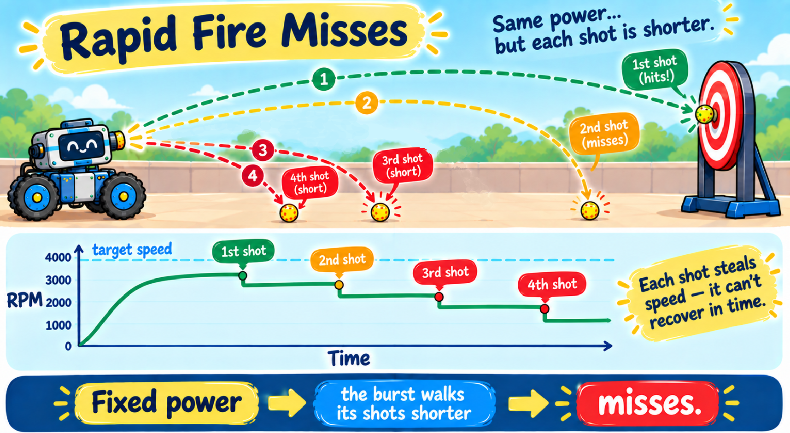
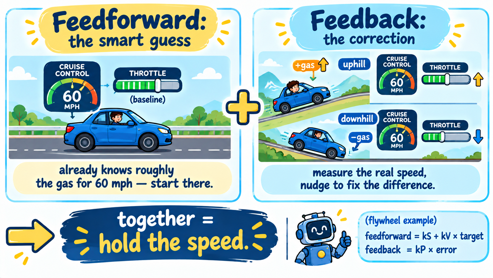

In the last lesson you saw the problem with your own eyes: hold X to rapid-fire, and the flywheel's RPM sags with every shot. The first ball flies true, but the second and third leave slower and fall short. On a real BioBuzz robot that's a disaster — you get four game pieces, and you want all four to score in one quick burst.

Setting power = 0.67 is open-loop control: you pick a number and hope. The motor has no
idea a shot just slowed it down — it keeps applying the same voltage, so recovery is slow. To hold speed you
need feedback: measure the real RPM (you already can, with the encoder!) and react to it.
Think about cruise control in a car set to 60 mph. It doesn't just freeze the gas pedal. It measures your speed and adjusts the throttle: drifting below 60 going uphill? More gas. Speeding up downhill? Less gas. But here's the clever part — a good cruise control already knows roughly how much gas 60 mph needs on flat road, so it starts there and only makes small corrections. That's much faster than starting from zero and guessing.

Feedforward is the smart guess: from physics, roughly what power does this target speed need? It gets you almost all the way there instantly. Feedback (the P term) watches the real RPM and adds a correction for whatever the guess missed — a shot, a low battery, friction. Together they're faster and steadier than either one alone.
Every loop, the controller sets the motor power with one line of math:
where error = target RPM − actual RPM (how far off you are right now). Just two tuning numbers — gains — shape it:
kV (the feedforward) — the cruise guess: how much power each RPM of
target needs. Our motor hits 6000 RPM at full power, so to hold a speed you need about power = RPM ÷
6000 — which makes kV ≈ 1 ÷ 6000. All by itself, kV × target lands the
wheel right on target with no measuring at all. (This is what most FTC teams use for a flywheel.)kP (the correction) — the feedback, the P in PID. The farther off
target you are, the harder it pushes: drift a little, nudge a little; drift a lot, shove a lot. Once kV
is set, kP does nothing at rest — it only wakes up when a shot knocks the RPM down, and
snaps it back. It's the one you tune by feel.Same shooter as last lesson, but now the controller drives it. The Power slider is gone — the
controller sets power itself — and you have a Target, kV, and kP. The
purple power line shows what the controller is commanding; watch it spike right after each
shot as kP fights back. (The key under the graph names each line.)
Step 1 — calibrate the feedforward (kV). Leave kP at 0. Press Y to spin up, and adjust kV until the green RPM line settles right on the dashed target line — no firing yet. That's the feedforward doing all the work by itself.
Step 2 — add the correction (kP). Now hold X to rapid-fire. With kP still 0 the green line dips on each shot and crawls back — late shots sag. Slowly raise kP: after each shot the purple power line spikes and the RPM snaps back to target. Tune until all four burst shots hold.
Watch out: push kP too high and it gets jittery and oscillates (bouncing above and below the line). The sweet spot is a fast snap-back with no bounce. Try it with a light wheel — that's where the controller really earns its keep.
Flywheel.javaTime to give your real flywheel the same brain. You'll upgrade the subsystem from last lesson's manual power trim to an automatic controller — a few small edits.
Put the numbers at the top of the class. (These are a solid tune for this motor; you can adjust kP
to taste, just like in the widget.)
Flywheel.java⩢ Copyprivate static final double TARGET_RPM = 4000.0; // the STARTING target speed the controller holds
private static final double kV = 0.000167; // feedforward: power per RPM (about 1 / 6000 free speed)
private static final double kP = 0.00020; // correction: how hard to fix an RPM error
private static final double TRIM_STEP = 8.0; // RPM the right stick trims the target per loop
private static final double TARGET_MIN = 2500.0; // limits the driver can trim the target between
private static final double TARGET_MAX = 5500.0;The target isn't fixed — the driver will trim it. So it needs to be a field (a value that can
change), starting at TARGET_RPM.
Flywheel.java⩢ Copyprivate double targetRpm = TARGET_RPM; // the speed the controller holds; the right stick trims itLast lesson the right stick trimmed the raw power. Now the controller sets the power itself — so trimming power would just get overwritten. Instead, your trim now nudges the target, and the controller holds whatever target you dial in. Same stick, better meaning: up = higher target = stronger shot.
Flywheel.java⩢ Copy/** Trim the target RPM up or down (right stick). The controller then holds the new target. */
public void trim(double amount) {
if (Math.abs(amount) < STICK_DEADZONE) return; // ignore tiny drift
targetRpm += amount * TRIM_STEP; // creep the target up or down
targetRpm = Math.max(TARGET_MIN, Math.min(TARGET_MAX, targetRpm)); // keep it in range
}
/** The RPM the controller is trying to hold -- for telemetry. */
public double getTarget() {
return targetRpm;
}update() with the controllerThis is the heart of the lesson. Open update() and replace the old one-line
shooter.setPower(spinning ? power : 0.0); with the feedforward + P controller. Read it against the
formula: error is how far off you are, and power is the smart guess plus the correction.
Flywheel.java⩢ Copyif (spinning) {
double error = targetRpm - getRpm(); // how far off the target speed we are
power = kV * targetRpm + kP * error; // feedforward (kV*target) + correction (kP*error)
power = Math.max(0.0, Math.min(1.0, power)); // keep it a legal motor power
shooter.setPower(power);
} else {
shooter.setPower(0.0);
}kP can be smallBecause the feedforward (kV * targetRpm) already provides the baseline power, kP only
has to clean up small disturbances — so it can be tiny, which keeps it from overshooting and oscillating.
Pure "P-only" control (no feedforward) has to do all the work with a big kP, and then it wobbles.
Feedforward is what lets you keep kP gentle.
One last edit in the OpMode: the right stick should call your new trim() instead of the old
nudge(). Open the flywheel loop and change the trim line:
// Y toggles the flywheel. The controller holds the target; the right stick now trims the TARGET.
if (gamepad1.y && !previousY) robot.flywheel.toggle();
previousY = gamepad1.y;
robot.flywheel.trim(-gamepad1.right_stick_y);PID stands for Proportional, Integral, Derivative — three kinds of correction. You built the P part (plus feedforward). So why skip the other two?
kP's overshoot. It genuinely helps some shooters — but the encoder's speed reading is a little
noisy and D amplifies noise, so many teams skip it or keep it tiny.For a flywheel, feedforward + P is the sweet spot the pros actually use. Now you know what the whole alphabet means.
Your shooter now spins at a rock-steady speed — the shots are consistent. The last piece is aiming: the next lesson adds an adjustable hood so you can change the launch angle and reach the hive from different spots on the field.